Setting the stage
In conversations with enterprise customers led by Clipchamp customer representatives, the importance of commercial brand kits was a common theme. Customers wanted a centralized repository of their brand elements to standardize branding/media creation and reduce bottlenecks on key team members to distribute brand assets individually.
“For us, branding is huge. It needs to match our type of company colors. Like it needs to have those certain color aspects for it. That's a must have.”
Because of the strong customer desire for this feature, Clipchamp was encouraged to explore putting the brand kit functionality inside a premium SKU to which Designer (Microsoft’s image team) would also contribute functionality. Ensuring that our brand kit Minimum Viable Product (MVP) was something customers would actually pay for was a top focus in the design process.
Marketing planned to announce the feature at Ignite (Microsoft’s largest yearly conference in November) to capitalize on customer energy and attention. As a result of the deadline, the project was tightly scoped.
Design requirements
From the research our customer representatives had conducted, there were 5 main user requirements that would justify inclusion in the premium SKU:
Create
I can create a brand kit that includes logos, colors, and fonts (parity with Clipchamp consumer offerings).
Distribute
I can distribute my created brand kit widely and peer to peer.
Store compliantly
Brand kits are shared on a compliant storage solution (OneDrive for Business / SharePoint).
Load
I can load an organization-wide or peer to peer brand kit into my project to get branded assets.
Use
I can create a video using the branded assets from the brand kit.
A note on storage
To create brand kits compatible with Clipchamp video editor, we needed a new file extension and folder structure to hold all the assets associated with the brand kit. After discussions amongst the squad, we landed on creating a brand kit folder with a manifest (.brandkit file) inside because it closely matched Clipchamp consumer patterns, didn’t have size constraints, and the folder was easily scannable.
As part of the 2nd requirement listed above, brand admins needed to distribute this brand kit folder to a large number of users either at the company or organizational level. This meant that our solution would need to leverage Organizational Asset Libraries (OALs), a SharePoint site set up by an M365 admin that can store branded assets. Once a site is designated as an OAL, everyone within that permissions structure receives access to that content. OALs were the best solution Microsoft had to offer for distributing assets, but we were unsure as a team if enterprise customers would understand the concept.
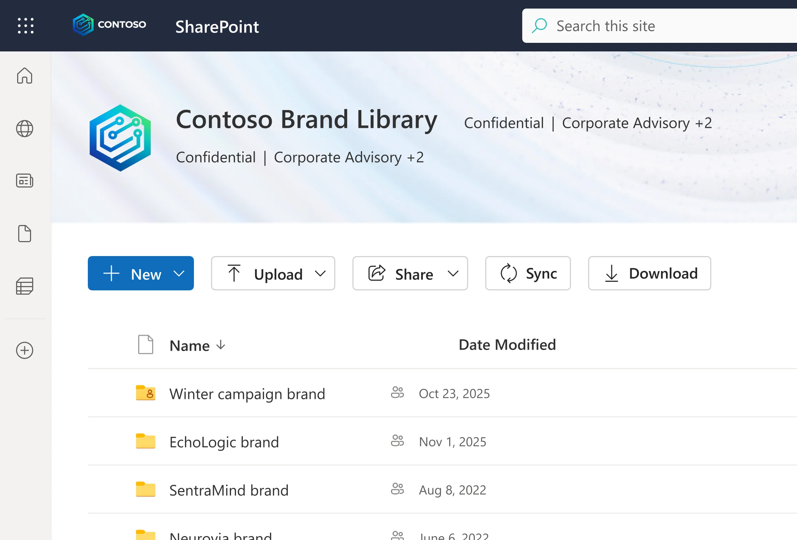
Designs
Because of the existing patterns in the Clipchamp consumer app and the clear design requirements set forth by the customer representatives, designing the feature was relatively straightforward. Main flows included creating a brand kit inside the OAL and using the brand kit.
Customer validation
The designs went through 2 iterations + internal feedback before they were brought to customers to validate whether the designs in their current shape would bring enough value to justify paying extra for.
I interviewed 6 customers and asked questions to understand their current brand workflows, their level of comfort surrounding OALs, and whether the current MVP design offering was exciting to them.
Surprisingly, even in its scoped down state, the designs were very compelling to users, leading us to conclude that our MVP would bring significant value to customers. The concept of an OAL was understood and fit in well with current workflows for the majority of customers. Lowlights were traditional SharePoint permissions concerns surrounding assets and the .brandkit file and discoverability of the feature for users.
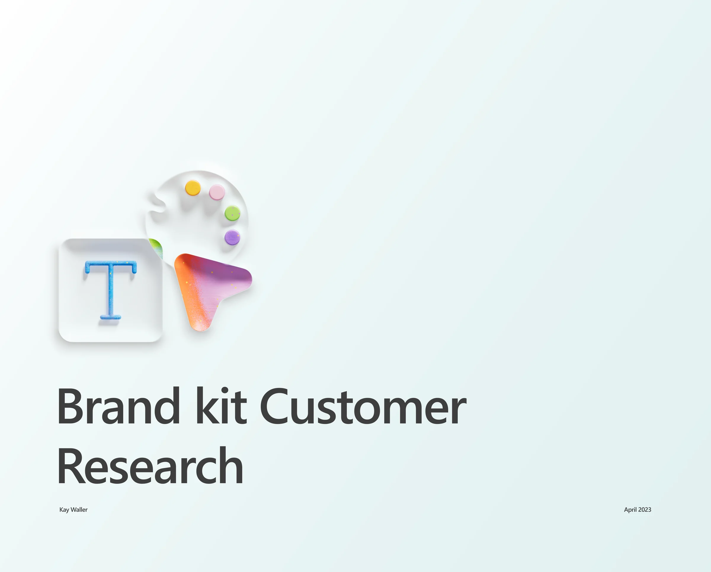
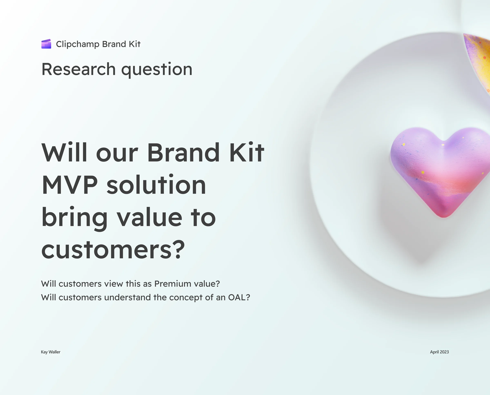
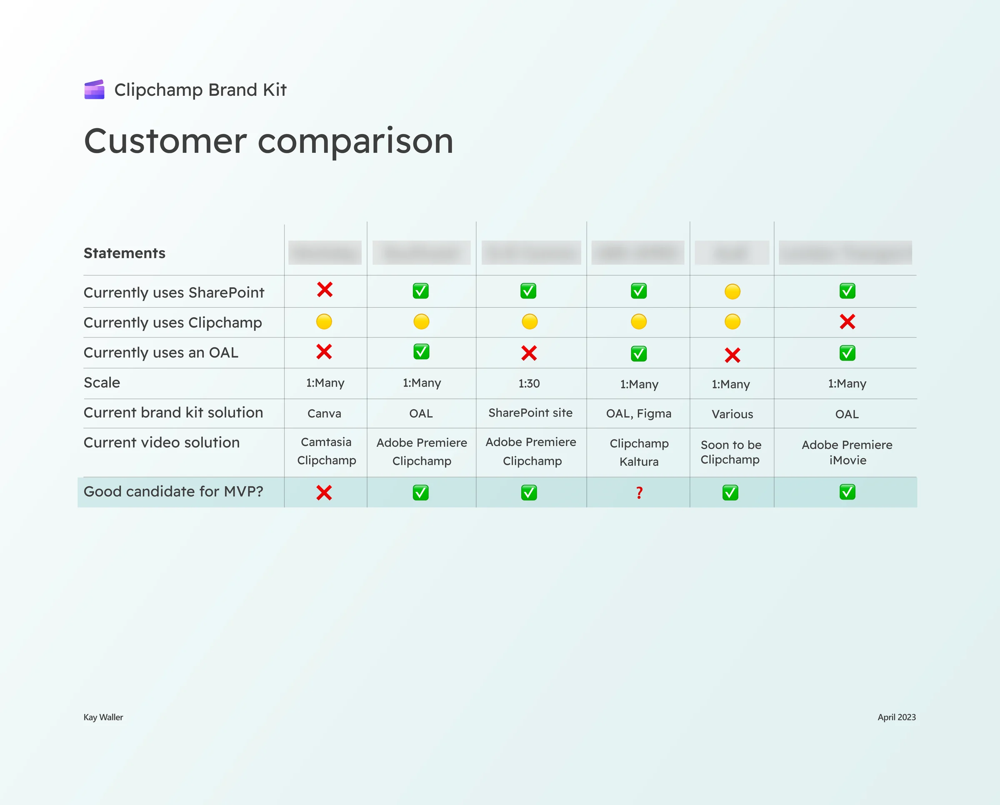
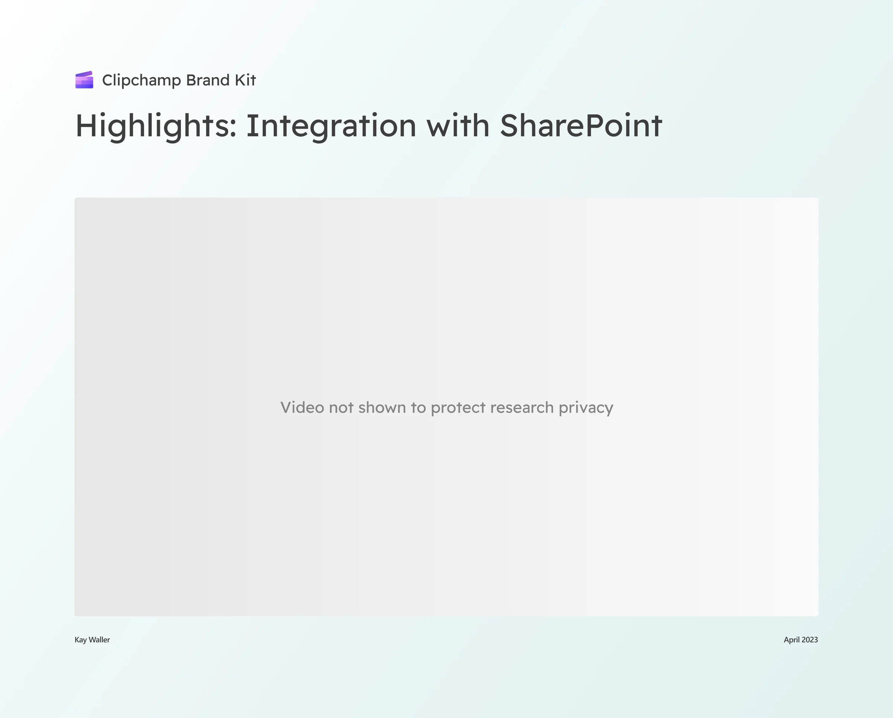
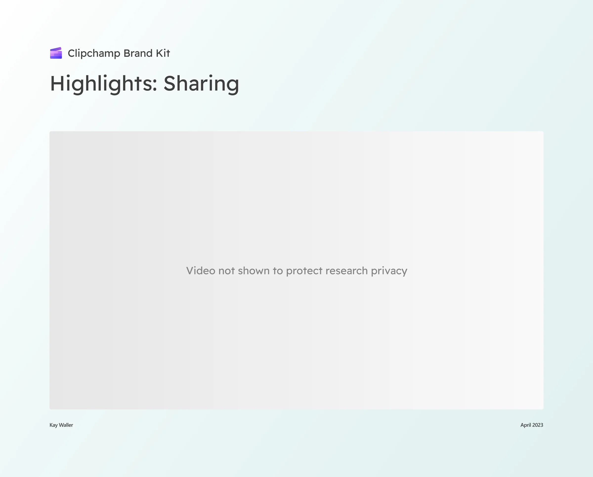
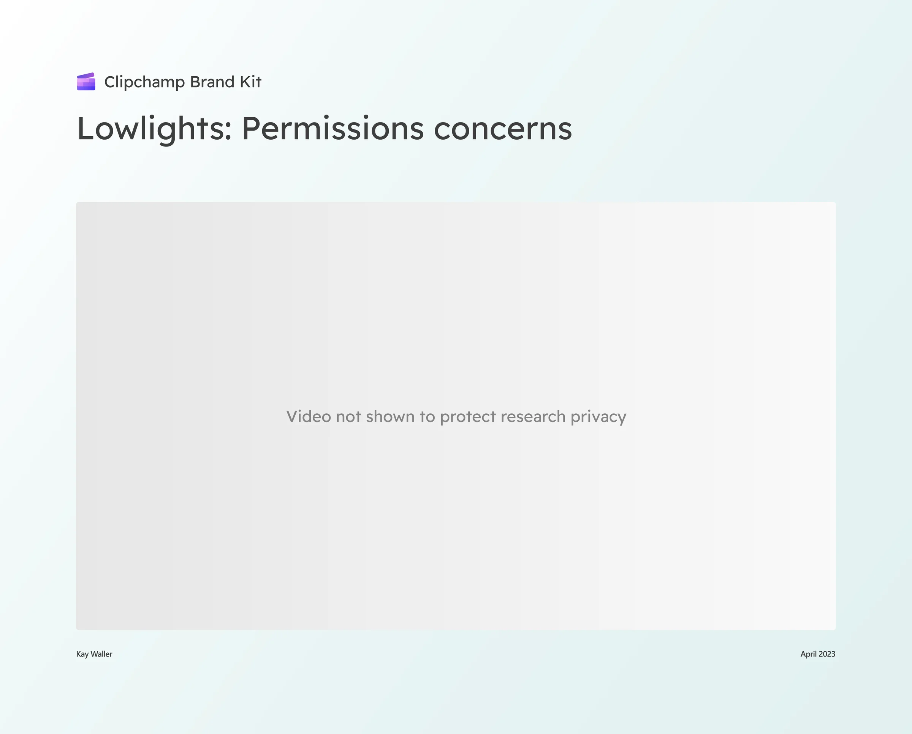
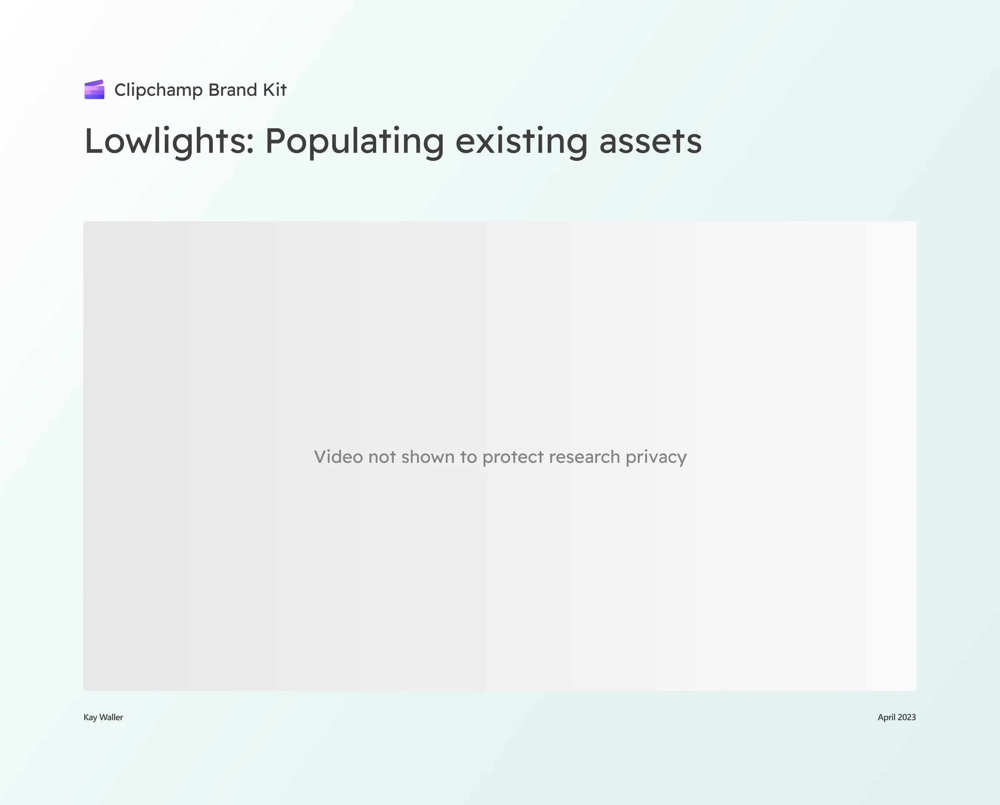
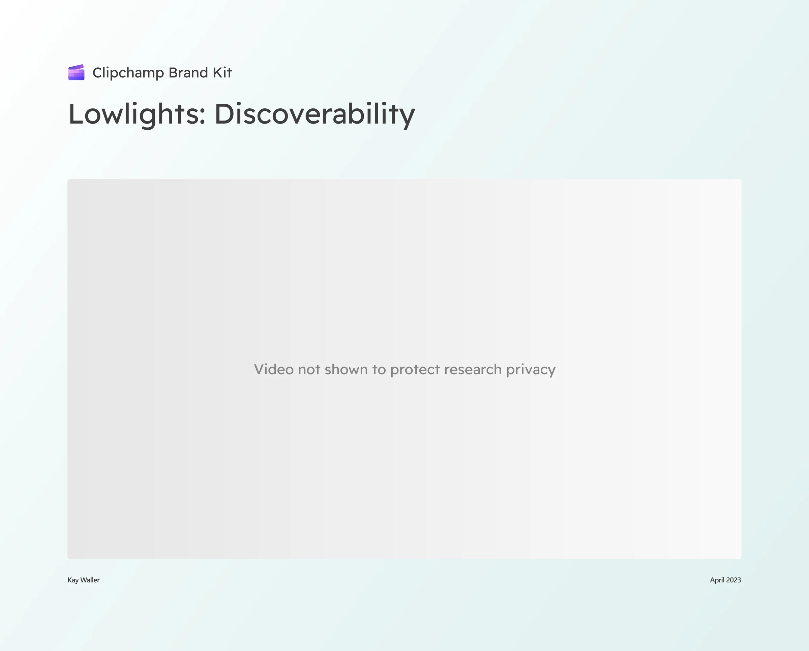
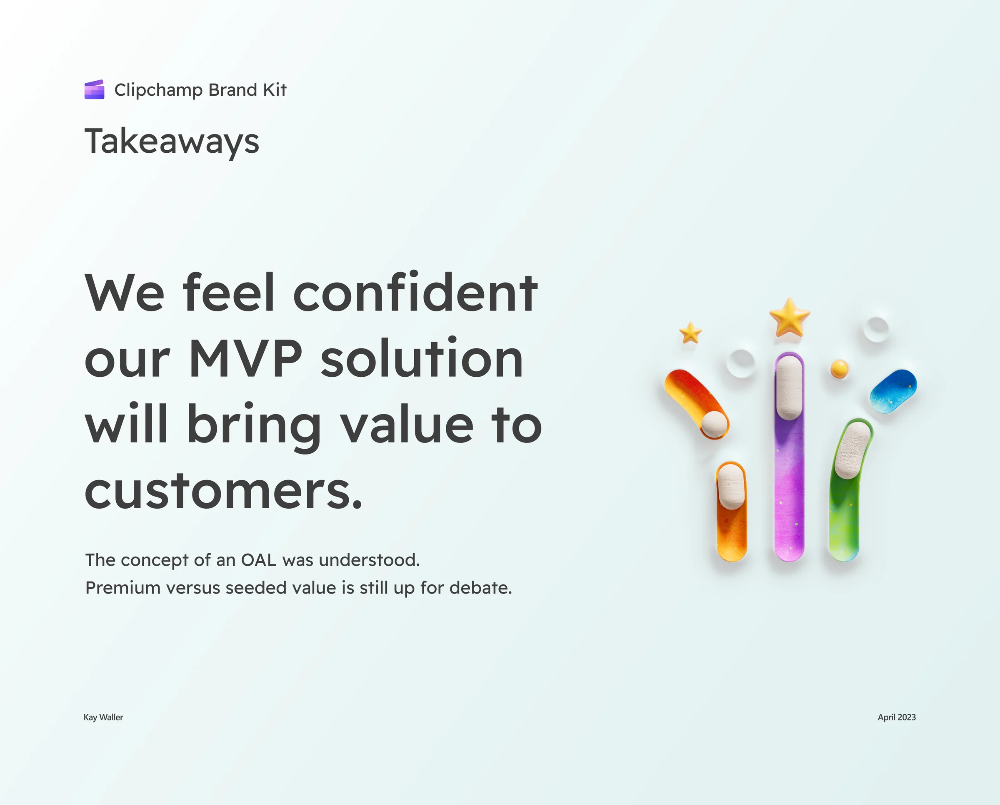
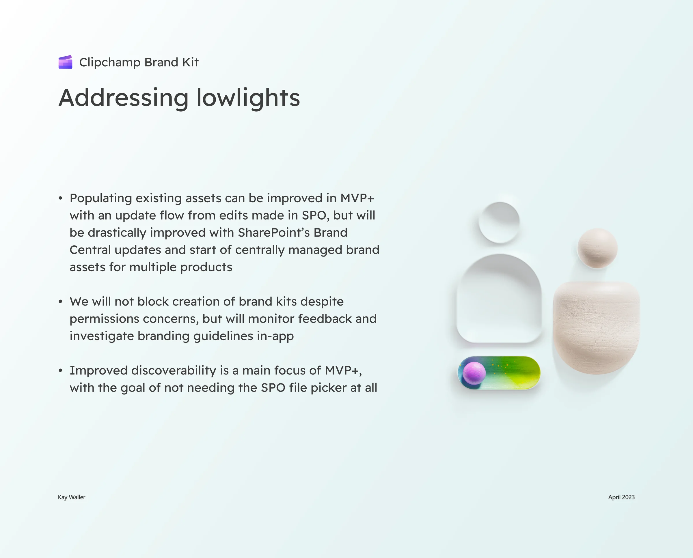
Implementation
With our designs positively validated we started implementation, and brand kits successfully shipped in November and were featured in a blog post at Ignite.
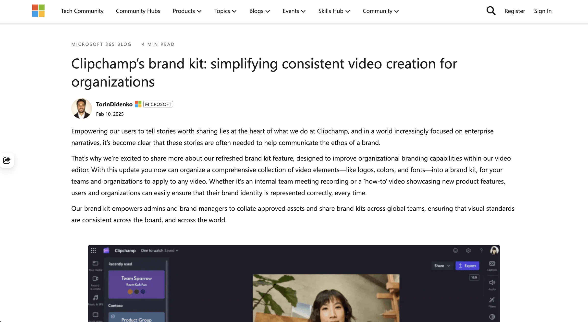
Brand kits ultimately didn’t ship under a premium SKU because the Clipchamp and Designer orgs decided to take a different strategic direction, but that just meant our customers would get the value for no added cost!
Highlights
- I felt confident shipping the designs because we had done so much customer validation, and I liked that feeling because I knew I was bringing real value to customers.
- Even 2 years later, I still see people across Clipchamp and Microsoft using the feature for holidays, events, anniversaries, etc. that have specific branding.
Lowlights
- Understanding folder structures and SharePoint OALs was very challenging for me, and it was difficult to learn them well enough to explain them to customers.
- There were a lot more assets I wanted to add to brand kits (templates, images, and videos) as well as the ability to set rules for each asset uploaded (max logo size, lock positioning, etc.) but we never got the chance to ship a V2 before moving on to the next project. However, I would get a chance to add template functionality to brand kits on the next project!